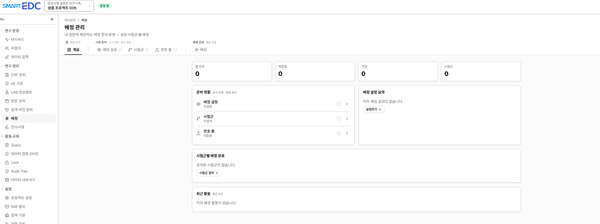
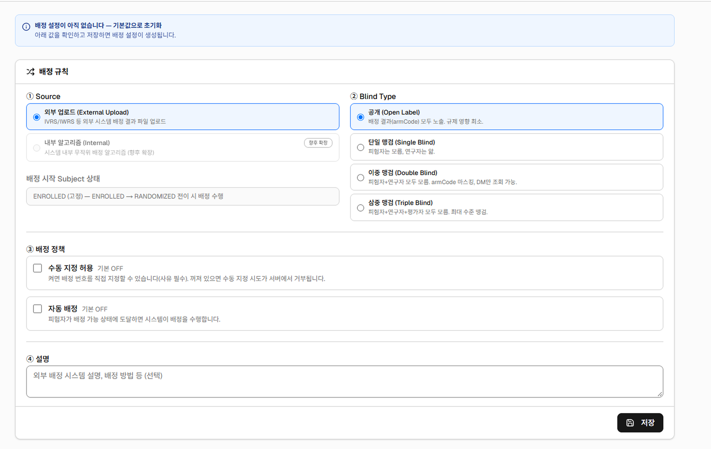
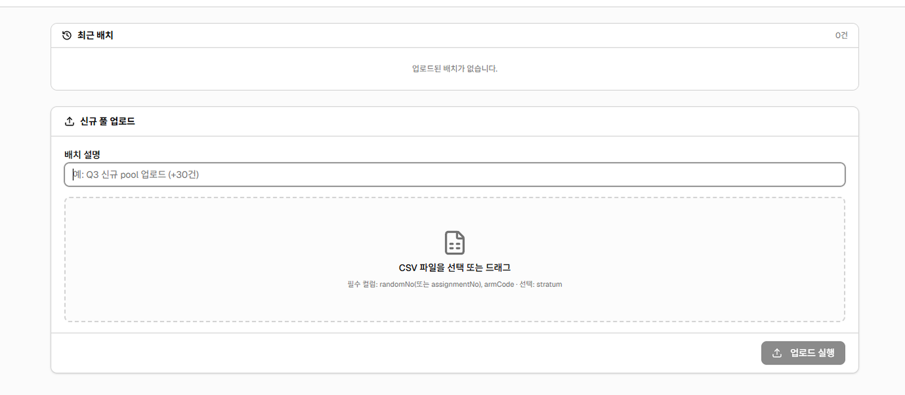
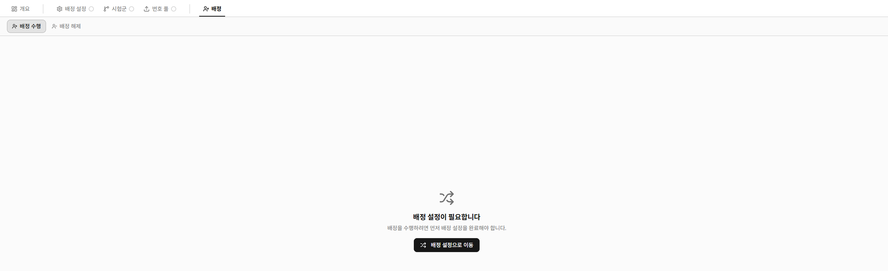
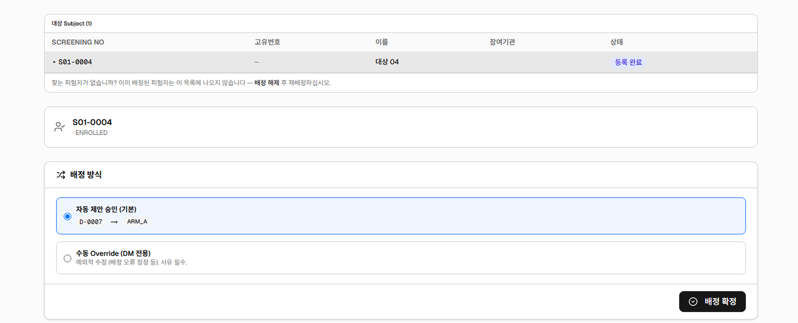
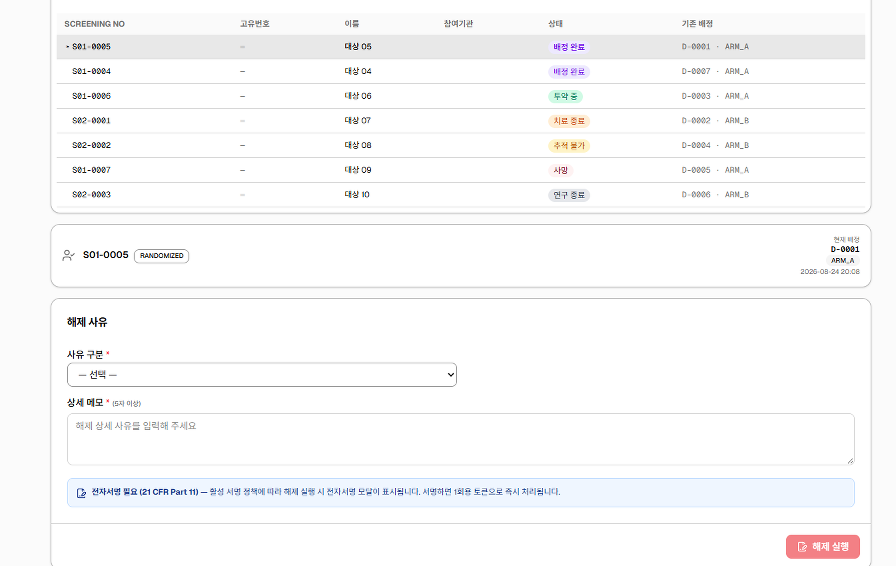

Randomisierung
SCR-RAND-007 · Randomisierungseinstellungen · Studienarme · Nummernpool · Randomisierung durchführen · Aufhebung
Überblick über die Randomisierung
- 1.1Bildschirmaufbau
- 1.2Nach Abschluss der Vorbereitung
1.1Bildschirmaufbau
Überblick
Hier bereiten Sie die Randomisierung vor und führen sie durch. Die obere Reiterleiste hat fünf Reiter: Übersicht · Randomisierungseinstellungen · Studienarme · Nummernpool · Randomisierung. Ein Klick auf einen Reiter wechselt den Inhalt, ohne die Seite zu verlassen. Die ersten drei Reiter dienen der Vorbereitung, der letzte dem Randomisierungsbetrieb.
Bildschirmbeschreibung

Reiterleiste — Hier wechseln Sie zwischen den fünf Bereichen. Reiter, für die Ihnen die Berechtigung fehlt, sind mit einem Schloss markiert und lassen sich nicht auswählen.
Einstellungen festlegen > — Springt direkt zum Reiter Randomisierungseinstellungen 2.1.
Studienarme definieren > — Springt zum Reiter Studienarme 2.2.
Auch jede Zeile der Übersicht Vorbereitungsstand führt beim Anklicken zum passenden Reiter.
Der ständige Einstieg ist im linken Menü Studienverwaltung > Randomisierung. Auch über das Randomisierungs-Widget im rollenbasierten Dashboard gelangen Sie hierher.
Der Pfad lautet Dashboard / Randomisierung.
Die kleine Schrift über dem Reiter zeigt die Gruppen: Start · Vorbereitung (Reihenfolge egal, mit Erledigt-Häkchen) · Randomisierungsbetrieb (Sammelaufgaben).
Die vier Kennzahlen sind Nummern im Pool · Randomisiert · Verfügbar · Studienarme. Vor der Vorbereitung stehen alle auf 0.
Vorbereitungsstand — Zeigt, ob die drei Vorbereitungsschritte erledigt sind. Ein leerer Kreis bedeutet offen, ein grüner Haken bedeutet erledigt. Die Reihenfolge ist egal, Sie können also mit dem anfangen, der Ihnen am besten passt.
Letzte Aktivitäten — Zeigt die letzten fünf Einträge zu Randomisierung, Aufhebung und Upload.
Der Untertitel „Randomisierung und Betrieb entsprechend Ihren Berechtigungen“ bedeutet: Welche Reiter und Schaltflächen Sie sehen, hängt von der Person ab.
Zu beachten
Unbedingt prüfen Datenschäden · Formular nicht abschließbar
- • Derzeit kann nur der Systemadministrator diesen Bildschirm öffnen. Das ist eine vorübergehende Sperre, weil die Tests noch nicht abgeschlossen sind. Auch Datenmanager mit Randomisierungsrecht sehen im linken Menü keinen Randomisierungspunkt, und ein direkter Aufruf der Adresse wird blockiert. Das liegt nicht an den Berechtigungen. Suchen Sie daher nicht in der Rechteverwaltung, sondern fragen Sie den Systemverantwortlichen nach dem öffentlichen Zeitplan.
1.2Nach Abschluss der Vorbereitung
Überblick
Sobald die drei Vorbereitungsschritte abgeschlossen sind, verändert sich dieselbe Übersicht: Die Kennzahlen zeigen echte Werte, und die Einstellungszusammenfassung, die Verteilung je Studienarm sowie die letzten Aktivitäten füllen sich. Während der Randomisierung können Sie an dieser Übersicht allein ablesen, wie weit die Randomisierung fortgeschritten ist.
Bildschirmbeschreibung

Der Kreis im Reiter wird zu einem grünen Haken. Das zeigt, dass die Vorbereitung abgeschlossen ist.
Kennzahlen: Nummern im Pool (hochgeladene Nummern) · Randomisiert (bereits vergeben) · Verfügbar (noch frei) · Anzahl der Studienarme. Wenn die Zahl der Verfügbaren sinkt, müssen Sie mehr Nummern hochladen.
Unter Vorbereitungsstand wird die kleine Schrift durch echte Werte ersetzt, zum Beispiel Einstellungen abgeschlossen · 2 definiert · 8 registriert.
Zusammenfassung der Randomisierungseinstellungen — Zeigt das Verfahren, die Verblindung und den Status. Die Aufnahme zeigt „Probanden randomisiert · Verfahren und Verblindung gesperrt“. Das bedeutet: Die Randomisierung hat begonnen, und die Einstellungen lassen sich nicht mehr ändern 2.1.
Verteilung nach Studienarm — Randomisiert / Pool und das Zielverhältnis. Der Balken zeigt, wie viel vom Pool verbraucht ist, und hat eine andere Achse als das Zielverhältnis.
Letzte Aktivitäten — im Format Proband → Studienarm (Randomisierungsnummer). Das Abzeichen rechts unterscheidet Randomisierung, manuelle Zuweisung, Aufhebung und Upload farblich.
Titel und Pfad bleiben gegenüber dem Zustand vor der Vorbereitung gleich.
Zu beachten
Unbedingt prüfen Datenschäden · Formular nicht abschließbar
- • Sind keine verfügbaren Nummern mehr vorhanden, lässt sich nicht mehr randomisieren. Der Bildschirm Randomisierung durchführen blockiert mit der Meldung „Keine Randomisierungsnummer verfügbar“. Prüfen Sie diese Kennzahl deshalb regelmäßig und laden Sie rechtzeitig weitere Nummern in den Pool hoch 2.3.
Vorbereitung
- 2.1Randomisierungseinstellungen
- 2.2Studienarme
- 2.3Nummernpool
2.1Randomisierungseinstellungen
Überblick
Hier legen Sie die Regeln der Randomisierung fest. Die Seite besteht aus vier Blöcken. Nach dem Speichern sperren sich die Werte schrittweise: Sobald Sie Nummern in den Pool hochladen, wird die Verblindung gesperrt, und sobald der erste Proband randomisiert ist, auch das Verfahren. Deshalb ist dies die Seite, die Sie von Anfang an richtig festlegen müssen.
Bildschirmbeschreibung

① Source (Randomisierungsverfahren) — Externer Upload ist vorausgewählt. Dabei laden Sie das Randomisierungsergebnis eines externen Systems wie IVRS oder IWRS als Datei hoch.
② Blind Type (Verblindung) — Wählen Sie zwischen offen, einfach verblindet, doppelt verblindet und dreifach verblindet. Unter jeder Option steht, wer das Randomisierungsergebnis sehen kann.
Manuelle Zuweisung zulassen — Standard ist ausgeschaltet. Wenn Sie es einschalten, können Sie in der Randomisierung Nummern direkt festlegen; eine Begründung ist dann Pflicht. Ist es ausgeschaltet, wird der Versuch schon abgelehnt 3.2.
Automatische Randomisierung — Standard ist ausgeschaltet. Wenn Sie es einschalten, führt das System die Randomisierung sofort aus, sobald ein Proband dafür bereit ist.
④ Beschreibung — Hier halten Sie den Namen des externen Randomisierungssystems oder das Vorgehen fest. Das Feld ist optional, aber es ist das einzige Feld, das sich auch nach der Sperrung noch bearbeiten lässt.
Speichern — Legt die Einstellungen an. Mit dem ersten Speichern wird die Randomisierungseinstellung erstellt.
Der Hinweis „Noch keine Randomisierungseinstellungen vorhanden — mit Standardwerten initialisiert“ bedeutet: Prüfen Sie die Werte und speichern Sie. Erst dann wird die Einstellung angelegt.
Interner Algorithmus (Internal) ist eine künftige Erweiterung und lässt sich derzeit nicht auswählen. Unterstützt wird nur der externe Upload. Deshalb ist der Upload des Nummernpools zwingend nötig.
Startstatus des Probanden für die Randomisierung ist fest auf ENROLLED (Registrierung abgeschlossen) eingestellt. Der Wert lässt sich nicht ändern, und nur Probanden mit diesem Status kommen für die Randomisierung infrage.
Je höher die Verblindung, desto weniger Personen können das Randomisierungsergebnis sehen. Ab der doppelten Verblindung wird der Studienarm-Code verdeckt, und nur der Datenmanager darf die Daten einsehen.
③ Randomisierungsrichtlinien — Beide Optionen sind standardmäßig ausgeschaltet.
Zu beachten
Unbedingt prüfen Datenschäden · Formular nicht abschließbar
- • Verfahren und Verblindung lassen sich später nicht mehr ändern. Sobald Sie Nummern in den Pool hochladen, wird die Verblindung gesperrt. Sobald der erste Proband randomisiert ist, wird auch das Verfahren gesperrt. Danach können Sie nur noch die Beschreibung ändern. Jeder Schritt zeigt oben auf dem Bildschirm einen Sperrhinweis. Legen Sie die Werte deshalb erst fest, wenn der Randomisierungsplan im Protokoll feststeht.
2.2Studienarme
Überblick
Hier legen Sie die Gruppen fest, auf die Sie die Probanden verteilen. Es gibt drei Typen: Studienarm, Kontrollarm und Placeboarm. Die Spalte armCode in der Datei des Nummernpools muss mit dem hier festgelegten Code übereinstimmen, sonst gelingt der Upload nicht. Deshalb ist es sicherer, die Studienarme vor dem Nummernpool anzulegen.
Bildschirmbeschreibung

+ Neuer Studienarm — Öffnet das Fenster zum Hinzufügen eines Studienarms. Die Eingabefelder sind Code (armCode) · Name · Typ · Zielverhältnis.
Im Reiter ist Studienarme ausgewählt. Sie können direkt zu einer anderen Vorbereitung wechseln.
Vor dem Anlegen zeigt ein Leerhinweis an, dass noch nichts vorhanden ist. Nach dem Anlegen wird daraus eine Tabelle mit den Spalten Code · Name · Typ · Zielverhältnis · Randomisierungen · Aktion.
Der Hinweis darunter lautet: „armCode ist nach dem Anlegen unveränderlich (Immutable). Ein Arm mit Randomisierungshistorie lässt sich nicht löschen.“
Das Badge oben rechts zeigt Ihre aktuelle Rolle. Zum Bearbeiten von Studienarmen brauchen Sie die Berechtigung für die Randomisierungseinstellungen.
Zu beachten
Unbedingt prüfen Datenschäden · Formular nicht abschließbar
- • Der Code eines Studienarms lässt sich nach dem Anlegen dauerhaft nicht mehr ändern. Der Nummernpool und das externe Randomisierungssystem müssen denselben Code verwenden. Übernehmen Sie die Schreibweise aus dem Protokoll deshalb genau. Sobald eine Randomisierungshistorie vorliegt, lässt sich der Studienarm nicht mehr löschen. Dann können Sie nur noch Name, Beschreibung und Zielverhältnis ändern.
2.3Nummernpool
Überblick
Hier laden Sie die Liste der Randomisierungsnummern, die ein externes System erstellt hat, als CSV-Datei hoch. Da das Verfahren nur aus externem Upload besteht, können Sie ohne diesen Schritt keine Randomisierung durchführen. Sie müssen nicht alles auf einmal hochladen. Wenn die Nummern knapp werden, laden Sie eine weitere Charge hoch, die angehängt wird.
Bildschirmbeschreibung

Chargenbeschreibung — Name für diese Charge, damit Sie sie unterscheiden können. Schreiben Sie so, dass klar ist, was Sie hochgeladen haben, zum Beispiel „Q3 neuer Pool-Upload (+30 Fälle)“.
CSV-Datei auswählen oder hierher ziehen — Nach der Auswahl prüft das System den Inhalt vorab und zeigt an, welche Zeilen Probleme haben.
Upload starten — Vor der Dateiauswahl ist die Schaltfläche abgeblendet.
Letzte Chargen — Liste aller bisher hochgeladenen Chargen. Die Zahl rechts ist die Anzahl der Nummern.
Hinweis zum Dateiformat: Pflichtspalten sind randomNo (oder assignmentNo) und armCode. stratum ist optional. Der armCode muss mit dem Code übereinstimmen, den Sie bei den Studienarmen festgelegt haben 2.2.
Ohne hochgeladene Charge erscheint ein Leerhinweis.
Zu beachten
Unbedingt prüfen Datenschäden · Formular nicht abschließbar
- • Dieselbe Randomisierungsnummer lässt sich nicht zweimal hochladen. Doppelte Nummern innerhalb der Datei oder Nummern, die bereits hochgeladen wurden, werden herausgefiltert. Bei weiteren Uploads laden Sie nur die Bereiche herunter und hoch, die das externe System neu vergeben hat.
Randomisierungsbetrieb
- 3.1Randomisierung durchführen (bei unvollständiger Vorbereitung)
- 3.2Zielproband auswählen und Randomisierung bestätigen
- 3.3Randomisierung aufheben
3.1Randomisierung durchführen (bei unvollständiger Vorbereitung)
Überblick
Der Bildschirm Randomisierung durchführen sieht je nach Vorbereitungsstand anders aus. Wenn etwas blockiert, zeigt Ihnen der Bildschirm selbst, was fehlt. Lesen Sie den Hinweis und gehen Sie zum entsprechenden Vorbereitungsschritt zurück.
Bildschirmbeschreibung


Randomisierung durchführen — Weist dem Probanden eine Randomisierungsnummer zu.
Randomisierung aufheben — Nimmt eine bereits vergebene Nummer wieder zurück 3.3. Beide Punkte sind Umschalter im selben Reiter.
Fehlt die Einstellung, blockiert der Bildschirm mit Randomisierungseinstellungen erforderlich.
Zu den Randomisierungseinstellungen — Wechselt direkt zum Reiter der Einstellungen 2.1.
Ist die Einstellung fertig, der Nummernpool aber leer, zeigt der Vorschlagsbereich den Hinweis „Keine Randomisierungsnummer verfügbar. Bitten Sie den DM, den Pool hochzuladen.“ 2.3.
In diesem Zustand ist Randomisierung bestätigen abgeblendet und lässt sich nicht auswählen.
Zu beachten
Leicht missverständliches Verhalten
- • Wenn die Randomisierung blockiert, prüfen Sie in dieser Reihenfolge: Vorbereitungsstand in der Übersicht, dann die leeren Punkte, dann den jeweiligen Reiter. Die drei Vorbereitungsschritte haben keine feste Reihenfolge. Der Nummernpool lässt sich jedoch nicht vor den Studienarmen hochladen, weil das System beim Upload den Arm-Code in der Datei prüft.
3.2Zielproband auswählen und Randomisierung bestätigen
Überblick
Sobald alle Vorbereitungen abgeschlossen sind, erscheinen die Zielprobanden in einer Tabelle. Wählen Sie einen Probanden aus, schlägt das System eine Nummer vor. Bis Sie die Randomisierung bestätigen, wird nichts gespeichert. Prüfen Sie daher die vorgeschlagene Nummer und den Studienarm, bevor Sie fortfahren.
Bildschirmbeschreibung


Zielproband (Subject) — Liste der Probanden, die randomisiert werden können. Wenn Sie eine Zeile auswählen, wechselt der Bereich darunter zu diesem Probanden.
Automatischen Vorschlag bestätigen (Standard) — Zeigt die vom System gewählte Randomisierungsnummer → Studienarm. Die Aufnahme zeigt D-0007 → ARM_A.
Manuelles Override (nur DM) — Sie legen die Nummer selbst fest. Das ist eine Ausnahmemaßnahme zur Korrektur eines Randomisierungsfehlers, und die Begründung ist Pflicht. Lesen Sie den Hinweis unten.
Randomisierung bestätigen — Hält die Randomisierung nach der gewählten Methode fest. Der Probandenstatus wechselt von Registrierung abgeschlossen → Randomisierung abgeschlossen.
Die Zahl in Klammern ist die Anzahl der Probanden, die randomisiert werden können. Es erscheinen nur Probanden mit dem Status Registrierung abgeschlossen.
„Den gesuchten Probanden finden Sie nicht? Bereits randomisierte Probanden erscheinen nicht in dieser Liste — heben Sie die Randomisierung auf und randomisieren Sie erneut.“
Code und aktueller Status des ausgewählten Probanden werden noch einmal angezeigt. Prüfen Sie hier, ob es der richtige Proband ist.
Nach der Bestätigung erscheint Randomisierung abgeschlossen — Randomisierungsnummer · Studienarm · Registrierung abgeschlossen → Randomisierung abgeschlossen grün. Es gibt kein gesondertes Bestätigungsfenster.
Zu beachten
Unbedingt prüfen Datenschäden · Formular nicht abschließbar
- • Die manuelle Zuweisung lässt sich nur wählen, wenn Berechtigung und Einstellung beide vorliegen. Auch mit der Berechtigung als Datenmanager ist das Feld deaktiviert, wenn in den Randomisierungseinstellungen Manuelle Zuweisung zulassen ausgeschaltet ist. Der Bildschirm nennt Ihnen beide Gründe getrennt. Da die manuelle Zuweisung die Zufälligkeit beeinträchtigt, verwenden Sie sie nur in Ausnahmefällen, etwa zur Korrektur eines Randomisierungsfehlers.
3.3Randomisierung aufheben
Überblick
Hier heben Sie eine bereits vergebene Randomisierungsnummer wieder auf. Das nutzen Sie, um einen Randomisierungsfehler zu korrigieren oder wenn ein Proband als ungeeignet eingestuft wurde. Die aufgehobene Nummer steht danach wieder als verfügbar zur Verfügung. Da die Aufhebung im Audit-Trail erfasst wird, sind die Angaben zum Grund genau zu machen, und je nach Projekteinstellung ist eine elektronische Signatur nötig.
Bildschirmbeschreibung

Zielproband auswählen — Alle randomisierten Probanden erscheinen. Wenn Sie eine Zeile auswählen, wechselt der Bereich darunter zu diesem Probanden.
Grund * — Wählen Sie eine von vier Optionen: Randomisierungsfehler · Proband als ungeeignet eingestuft · Protocol Amendment · Sonstiges.
Detailnotiz * — Sie müssen mindestens 5 Zeichen eingeben. Die Notiz bleibt im Audit-Trail erhalten.
Aufhebung ausführen — Erst wenn alle Pflichtfelder ausgefüllt sind, lässt sich die Schaltfläche auswählen. Bei Probanden in Behandlung kommen weitere Pflichtfelder hinzu (siehe Hinweis unten). Ist für die Einstellung eine Signatur nötig, erscheint das Fenster für die elektronische Signatur sofort nach der Auswahl.
In der Spalte Status erscheinen nicht nur Probanden mit dem Status Randomisierung abgeschlossen, sondern auch solche in Behandlung, Behandlung beendet, nicht nachverfolgbar, verstorben oder Studie beendet. Allerdings können Probanden mit Abschlussstatus nicht aufgehoben werden, auch wenn Sie sie auswählen.
Die Spalte Bisherige Randomisierung zeigt Randomisierungsnummer · Studienarm. Nutzen Sie sie, um das Ziel der Aufhebung zu prüfen.
Die aktuelle Randomisierung (Nummer · Studienarm · Zeitpunkt) des ausgewählten Probanden wird rechts erneut angezeigt.
„Elektronische Signatur erforderlich (21 CFR Part 11)“ erscheint nur in Projekten mit aktiver Signaturrichtlinie. In Projekten ohne Signatur erfolgt die Aufhebung direkt, ohne Unterschrift.
Zu beachten
Unbedingt prüfen Datenschäden · Formular nicht abschließbar
- • Probanden mit Abschlussstatus können nicht aus der Randomisierung genommen werden. Wählen Sie Probanden mit dem Status Behandlung beendet, nicht nachverfolgbar, verstorben oder Studie beendet aus, erscheint die Warnung „Probanden im Terminal-Status lassen sich nicht aufheben“, und die Schaltfläche Aufhebung ausführen bleibt deaktiviert. Was in der Liste steht und was Sie aufheben können, ist nicht dasselbe.
- • Um einen Probanden in Behandlung aufzuheben, ist die Genehmigung eines anderen verantwortlichen Prüfarztes (PI) nötig. Neben Grund und Detailnotiz müssen Sie hier die Kennung der genehmigenden PI-Person angeben und festlegen, in welchen Zustand der Proband nach der Aufhebung kommt. Wird die Aufhebung als vorzeitiger Abbruch behandelt, wählen Sie zusätzlich den Grund für das Behandlungsende. Legen Sie die genehmigende Person vorher fest.
Leicht missverständliches Verhalten
- • Je nach Projektstatus ist die Aufhebung selbst gesperrt. In den Phasen Abschluss und Archivierung lässt sich die Schaltfläche Aufhebung ausführen auch dann nicht aktivieren, wenn Sie einen Grund eingegeben haben. Ein Aufhebungsprotokoll lässt sich nach dem Speichern weder ändern noch löschen.